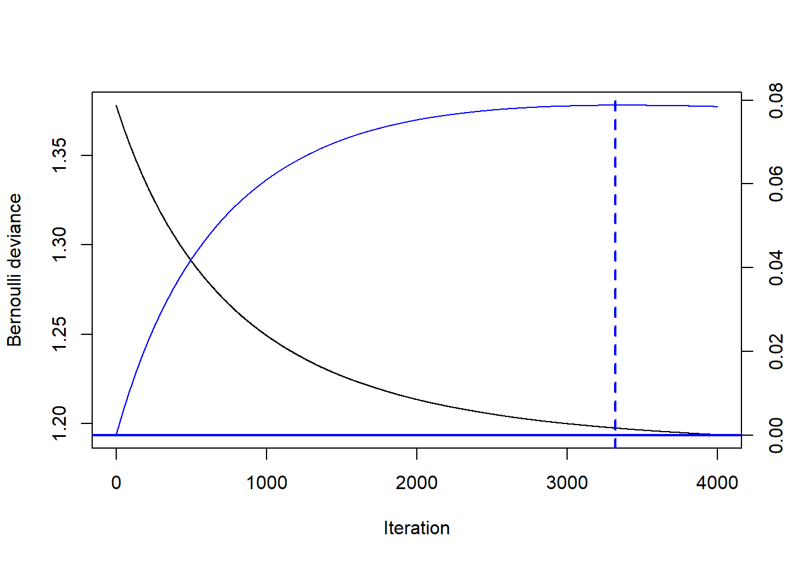
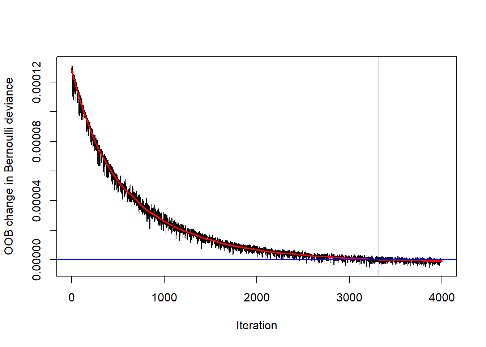
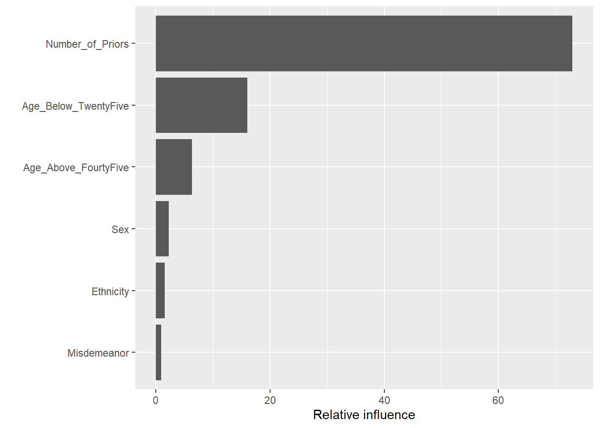
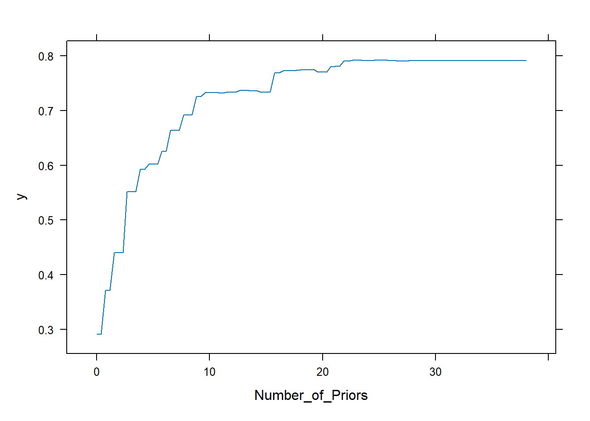
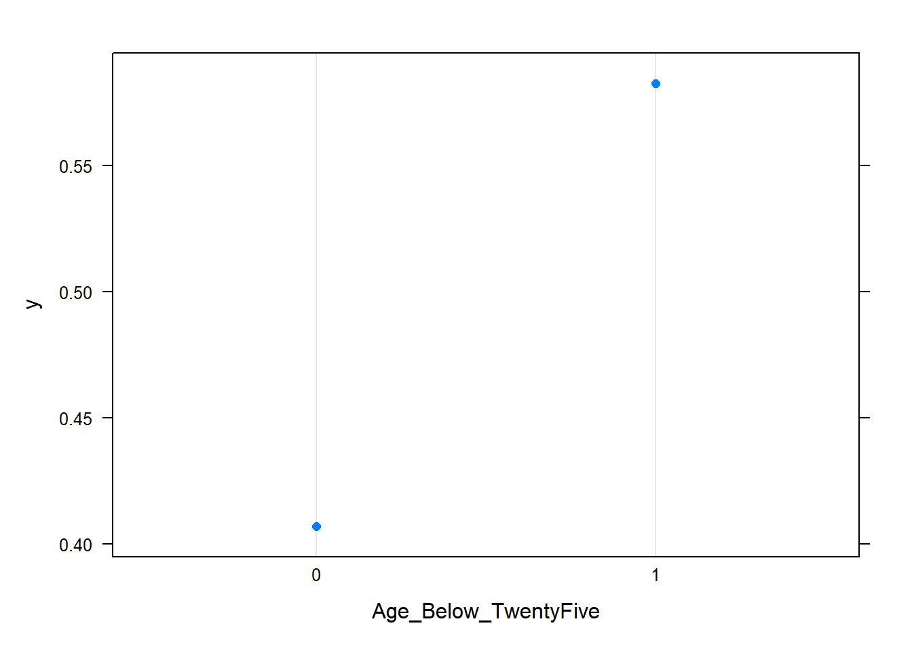
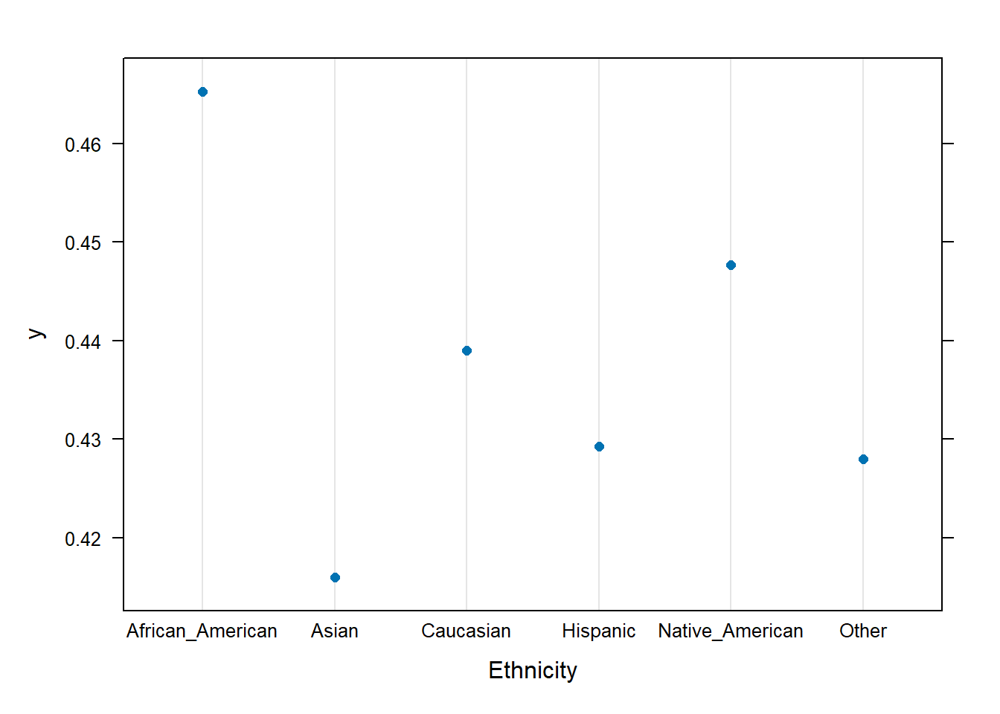
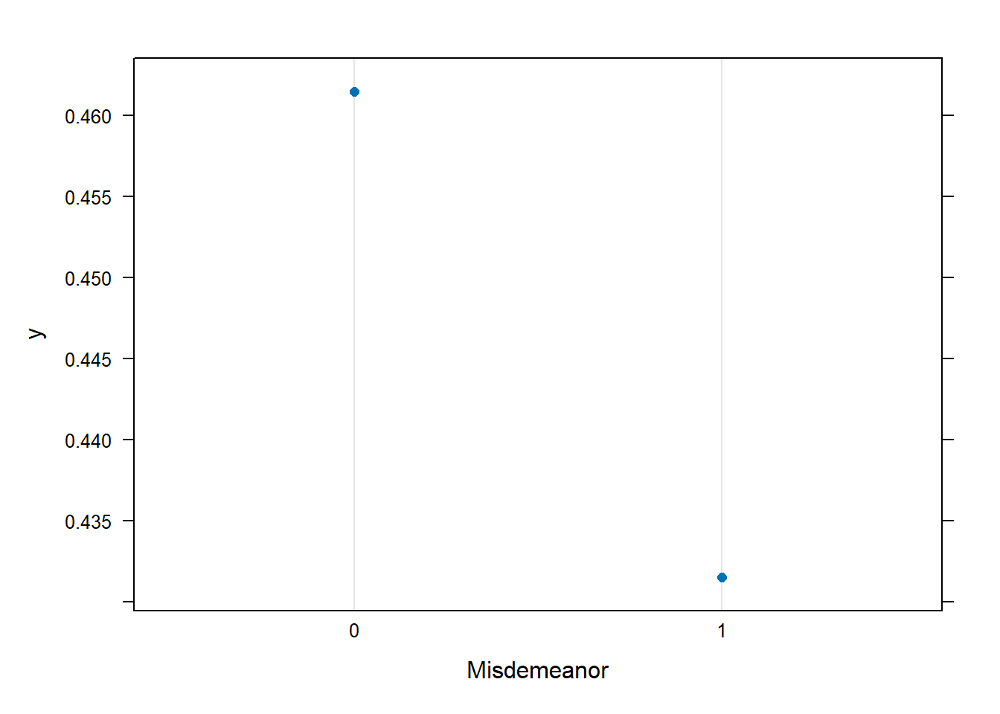
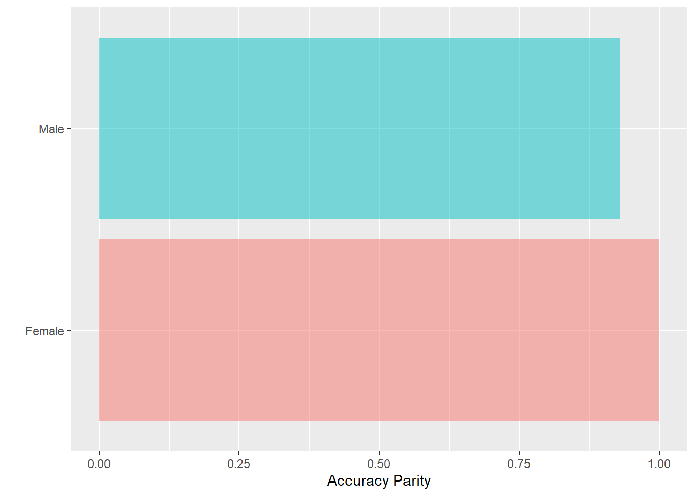
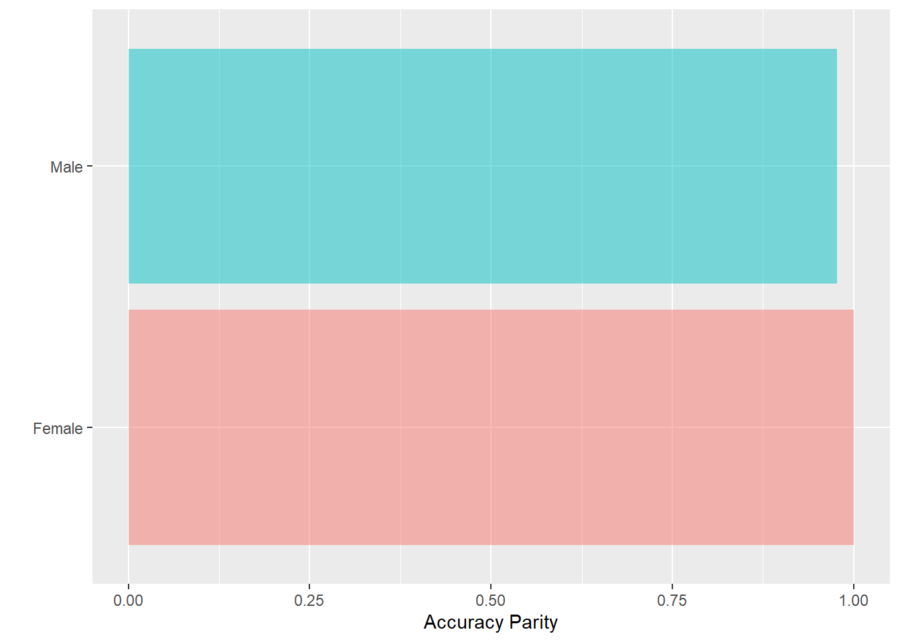

library(tidyverse) # datahåndtering, grafikk og glimpse()
library(rsample) # for å dele data i training og testing
library(gbm) # Funksjoner for boosting
library(caret) # For funksjonen confusionMatrix()
library(fairness) # For fairnessmetrics
library(gtsummary) # For å lage litt penere tabeller9 Boosting
I dette kapittelt skal vi bruke følgende pakker:
Det er flere typer boosting-algoritmer. Men vi skal fokusere på stochastic gradient boosting. Adaptive boosting er presentert i læreboka, men først og fremst som et illustrativt eksempel eller en pedagogisk introduksjon. Andre boosting-algoritmer er varianter av gradient boosting.
Det er også et poeng at softwaren for adaptive boosting er mer begrenset enn for gradient boosting. Vi bruker ‘gbm’ pakken som gir grunnleggende funksjonalitet.
Det sentrale punktet for boosting er at modellen bygges steg for steg med en gradvis forbedring fra forrige runde slik at modellen blir gradvis bedre og bedre. Dette til kontrast til bagging der styrken ligger i avstemning på tvers av mange klassifikasjonstrær. I boosting er det altså samme modell som forbedres i hvert steg. Dette gjøres på en måte der feilklassifiseringen vektes opp i hver iterasjon. I adaptive boosting lages den en vekt litt mekanisk, mens i gradient boosting baseres det på en gradient fra velkjente statistiske fordelinger, f.eks. binomisk fordeling for kategorisk utfall.
Vi bruker compas-dataene igjen. Men nå må vi omkode utfallsvariabelen til en numerisk variabel fordi funksjonen gbm krever nummerisk utfallsvariabel.
compas <- readRDS("../data/compas.rds") %>%
mutate(Two_yr_Recidivism = ifelse(Two_yr_Recidivism == "1", 1, 0)) %>%
na.omit()
glimpse(compas)Rows: 6,172
Columns: 7
$ Two_yr_Recidivism <dbl> 0, 1, 1, 0, 1, 0, 0, 0, 1, 0, 0, 1, 1, 0, 0, 1, 1…
$ Number_of_Priors <int> 0, 0, 4, 0, 14, 3, 0, 0, 3, 0, 0, 1, 7, 0, 3, 6, …
$ Age_Above_FourtyFive <fct> 1, 0, 0, 0, 0, 0, 0, 0, 0, 0, 0, 1, 0, 0, 0, 0, 0…
$ Age_Below_TwentyFive <fct> 0, 0, 1, 0, 0, 0, 0, 0, 1, 0, 0, 0, 0, 0, 0, 0, 0…
$ Misdemeanor <fct> 0, 0, 0, 1, 0, 0, 1, 0, 1, 1, 0, 0, 0, 1, 0, 0, 0…
$ Ethnicity <fct> Other, African_American, African_American, Other,…
$ Sex <fct> Male, Male, Male, Male, Male, Male, Female, Male,…Vi lager en split som tidligere
set.seed(42)
training_init <- initial_split(compas)
training <- training(training_init)
testing <- testing(training_init)9.1 Stochastic gradient boosting
Gradient boosting for klassifisering bruker ikke vekter på samme måte som adaboost, men bruker residualene. For et binomisk utfall (to kategorier kodet 0 eller 1) er residualen, \(r_i\), er definert som
\[ r_i = y_i - \frac{1}{e^{-f(x_i)}} \] Litt forenklet kan vi si at dette er det observert utfallet minus det predikerte utfallet fra logistisk regresjon. “Gradienten” er da \(f(x)\).
Gradient boosting fungerer med flere andre fordelinger, men hvis vi begrenser oss til klassifikasjon kan vi angi distribution = "bernoulli". Merk at for gbm må utfallsvariabelen være numerisk, ikke factor.
set.seed(542)
gradboost1 <- gbm(formula = Two_yr_Recidivism ~ .,
data = training,
distribution = "bernoulli",
n.trees = 4000,
interaction.depth = 3,
n.minobsinnode = 1,
shrinkage = 0.001,
bag.fraction = 0.5)Merk angir argumentet bag.fraction = 0.5 i modellen (som forøvrig også er forvalget, så man behøver ikke skrive det, egentlig). I hver split brukes altså halve utvalget til å bestemme neste split slik at andre halvdel er out-of-bag data. Hvis dette argumentet settes til 1 brukes hele datasettet i hver split.
Standard plot av gis ved gbm.perf() som nedenfor, og viser forbedring for hver iterasjon. Ytterligere forbedring stopper opp ved nærmere 2500 iterasjoner, markert ved den vertikale blå linjen.
gbm.perf(gradboost1, oobag.curve = TRUE, method = "OOB",
plot.it=T, overlay = T) 

[1] 3322
attr(,"smoother")
Call:
loess(formula = object$oobag.improve ~ x, enp.target = min(max(4,
length(x)/10), 50))
Number of Observations: 4000
Equivalent Number of Parameters: 39.99
Residual Standard Error: 2.048e-06 Denne estimeringen kan justeres ved å endre tuningparametrene.
n.treeser antall iterasjoner, dvs. antall klassifikasjonstrær. Forvalget er 100, som er åpenbart altfor lavt, så sett noen tusen.interaction.depther antall split i hvert tre. Forvalget er 1, men Berk sier at 1-3 er ok.n.minobsinnodeer minste antall observasjoner i siste node. Forvalg er 1, men Berk anslår at 5-15 fungerer bra. (Hvis modellen har bare en split er det ikke sikkert dette er så viktig)shrinkageer hvor store skritt langs gradienten som testes i hver iterasjon, og dette skal være lavt. Forvalget er 0.001. Kostnaden er at det tar lengre tid enn ved et høyere tall (opp til 10 kan testes).bag.fractioner hvor stor andel av data som brukes i hver iterasjon. Dette hjelper for å redusere overfitting. Forvalget er 0.5, som innebærer at andre del av data kan fungere som OOB. Merk at Berk understreker at OOB bare kan brukes til å vurdere tilpassingen slik som i figuren over.
9.2 Tolkbarhet
Som i random forest kan vi undersøke hvilke variable som er mest betydningsfulle i prediksjonen. I utgangspunktet gir summary() mot et gbm-objekt et plot, men dette er stygt og kan være vanskelig å lese skikkelig. Derfor inneholder koden nedenfor argumentet plotit=FALSE, så lages det et bedre plot med ggplot() etterpå.1
Resultatene er tolkbare tilsvarende som relative importance som vi så i random forest.
sumboost <- summary(gradboost1, method = permutation.test.gbm, normalize = T,
plotit = F)
ggplot(sumboost, aes(x = reorder(var, rel.inf), y = rel.inf)) +
geom_col()+
ylab("Relative influence")+
xlab("")+
coord_flip()
Merk at resultatet fra summary() her returnerer en data.frame som kan plottes direkte med ggplot. Eneste mystiske som skjer er at x er angitt som sortert etter verdier på y-variabelen. Så er plottet snudd om med coord_flip til slutt.
Man kan også plotte hvordan resultatet endres med ulike verdier på prediktorene. Dette tilsvarer partial dependence. Her er det mest hensiktsmessig å bruke den innebygde funksjonen plot() som kaller en underliggende plot-funksjon for gbm-objekter.
plot(gradboost1, "Number_of_Priors", type = "response")
plot(gradboost1, "Age_Below_TwentyFive", type = "response")
plot(gradboost1, "Ethnicity", type = "response")
plot(gradboost1, "Misdemeanor", type = "response")
9.3 Prediksjon og confusion matrix
Vi gjør prediksjon på tilsvarende måte som før, men det er et par viktige detaljer. Forvalget for predict() for gbm-objekter er \(f(x)\) som her er på log odds skalaen, men hvis vi setter type = "response" så får vi ut en sannsynlighet (dvs. et tall mellom 0 og 1). Da kan vi klassifisere etter hvilken gruppe som er mest sannsynlig, dvs. hvis høyere enn 0.5
compas_p <- training %>%
mutate(pred = predict(gradboost1, type = "response"),
p_klass = ifelse(pred > 0.5, 1, 0))Lager enkel krysstabell med predikert mot observert (dvs confusion matrix)
tab <- table(compas_p$p_klass, training$Two_yr_Recidivism)
tab
0 1
0 1936 850
1 583 1260Lager bedre confusion matrix med alle øvrige utregninger. NB! Husk å presisere hva som er positiv verdi for at tallene skal blir riktig vei.
confusionMatrix(tab, positive="1")Confusion Matrix and Statistics
0 1
0 1936 850
1 583 1260
Accuracy : 0.6904
95% CI : (0.6769, 0.7037)
No Information Rate : 0.5442
P-Value [Acc > NIR] : < 2.2e-16
Kappa : 0.3695
Mcnemar's Test P-Value : 2.113e-12
Sensitivity : 0.5972
Specificity : 0.7686
Pos Pred Value : 0.6837
Neg Pred Value : 0.6949
Prevalence : 0.4558
Detection Rate : 0.2722
Detection Prevalence : 0.3981
Balanced Accuracy : 0.6829
'Positive' Class : 1
9.4 Asymetriske kostnader
Vi har det vanlige problemet med å vurdere om falske positive og falske negative er like problematisk. Igjen er det slik at den vurderingen krever en vurdering av utfallet man ønsker gjøre noe med og konsekvensene av tiltaket som skal iverksettes. For credit-dataene kan det jo være at noen ikke vurderes som kredittverdige.2
For å håndtere asymetriske kostnader kan vi vekte utfallene forskjellig og angi denne vekten i prosedyren. Argumentet weights = ... tar en vektor med verdier (ét tall for hver observasjon i dataene) og skal ikke være en del av datasettet.
Her er et eksempel der negative tillegges 2 ganger så mye vekt som positive i modellen. Når utfallene vektes ulikt i modellen vil det dermed slå ut på feilratene slik at det blir ulikt forhold for falske postive og falske negative (se mer i Berk kap. 6.4 og eksempel s. 277).
Vær obs på at det er ikke så lett å vite helt hvordan slik vekting slår ut på resultatene. Det er ikke et 1-til-1 forhold mellom vekting og feilrater. Som i annen justering kan dette gå ut over accuracy og andre mål, så det er vanligvis en trade-off her. Du må derfor sjekke resultatene og så evt. gå tilbake og justere vektene hvis det ikke ble slik du ønsket.
wts <- training %>%
mutate(wts = ifelse(Two_yr_Recidivism == 1, 1, 2)) %>% # se begrunnelse s. 274 i Berk
pull(wts)
set.seed(542)
gradboost2 <- gbm(formula = Two_yr_Recidivism ~ .,
data = training,
weights = wts,
distribution = "bernoulli",
n.trees = 4000,
interaction.depth = 3,
n.minobsinnode = 1,
shrinkage = 0.001,
bag.fraction = 0.5)Så kan vi gjøre prediksjon og confusion matrix på nytt.
compas_p <- training %>%
mutate(pred = predict(gradboost2, type = "response"),
p_klass = ifelse(pred > 0.5, 1, 0))Lager enkel krysstabell med predikert mot observert (dvs confusion matrix)
tab <- table(compas_p$p_klass, training$Two_yr_Recidivism)
tab
0 1
0 2329 1447
1 190 663Så kan vi legge tabellen inn i funksjonen confusionMatrix() for å også få diverse utregninger. (Husk å presisere hva som er positiv verdi for at tallene skal blir riktig vei.) Dette er altså akkurat samme prosedyre som vi har brukt ved tidligere prediksjoner.
confusionMatrix(tab, positive="1")Confusion Matrix and Statistics
0 1
0 2329 1447
1 190 663
Accuracy : 0.6464
95% CI : (0.6324, 0.6601)
No Information Rate : 0.5442
P-Value [Acc > NIR] : < 2.2e-16
Kappa : 0.2509
Mcnemar's Test P-Value : < 2.2e-16
Sensitivity : 0.3142
Specificity : 0.9246
Pos Pred Value : 0.7773
Neg Pred Value : 0.6168
Prevalence : 0.4558
Detection Rate : 0.1432
Detection Prevalence : 0.1843
Balanced Accuracy : 0.6194
'Positive' Class : 1
9.5 Hva med bias og fairness?
Det er heller ingenting nytt når det gjelder om prediksjonen kan slå ut skjevt for ulike grupper. Selvfølgelig kan det skje, og det bør jo undersøkes. Vi kan bruke akkurat de samme funksjonene som før.
Her er et eksempel med forskjeller i “accuracy” for menn og kvinner. Det er altså høyere andel riktig klassifiserte for kvinner enn for menn.
acc <- fairness::acc_parity(data = compas_p,
outcome = 'Two_yr_Recidivism',
group = 'Sex',
preds = 'p_klass',
base = 'Female')
acc[[2]]
9.6 Justere rettferdighet med vekting
Vi har allerede sett at vi kan justere algoritmen for asymetriske kostnader ved å vekte utfallet forskjellig. Vi kan også justere slik at vi også vekter opp undergrupper. Igjen er det ikke helt åpenbart hvordan det vil slå ut å vekte en gruppe opp eller ned, så det må vi sjekke.
Her er en kode for å lage vekter og legger den vekten inn i gbm. Tanken i koden her er å først angi vektingen for kostnader og undergrupper hver for seg, og så legge disse til per person i datasettet.
La oss først se på fordelingen av utfallet etter kjønn ved en enkel krysstabell. Her har jeg brukt funksjonen tbl_cross() for å få en penere tabell med summeringer, men en enklere tabell gjør også nytten.
training %>%
tbl_cross( row = Sex, col = Two_yr_Recidivism)| Two_yr_Recidivism | Total | ||
|---|---|---|---|
| 0 | 1 | ||
| Sex | |||
| Female | 575 | 315 | 890 |
| Male | 1,944 | 1,795 | 3,739 |
| Total | 2,519 | 2,110 | 4,629 |
Vi ser her at i datamaterialet er det lavere residiv blant kvinner enn menn, men det er også færre kvinner enn menn totalt. Dette kan jo være en indikator på hva som bør vektes opp. Her er et forslag der kvinner vektes opp generelt, men kvinner med residiv vektes opp enda mer. For menn vektes også residiv opp.
Vekten skal lages så det blir et tall per observasjon i datasettet, så utgangspunktet er trainingdataene. Så la oss lage en vekt som tar utgangpunktet i menn uten residiv og vekter det som 1. Hvis vi vil vekte opp residiv, så settes menn med residiv til 2. Tilsvarende for kvinner kan vi sette vektene høyere, f.eks. henholdsvis 2 og 4.
I koden nedenfor lages også en krysstabell bare for å sjekke at det ble slik det var tenkt. Tabellen har bare funksjon for å sjekke at det ble riktig.
wts <- training %>%
mutate(wts1 = case_when(
Sex == "Male" & Two_yr_Recidivism == 0 ~ 1,
Sex == "Male" & Two_yr_Recidivism == 1 ~ 2,
Sex == "Female" & Two_yr_Recidivism == 0 ~ 2,
Sex == "Female" & Two_yr_Recidivism == 1 ~ 4)) %>%
pull(wts1)
library(gtsummary)
df <- training %>%
mutate(wts = factor(wts))
df %>%
select(Sex, Two_yr_Recidivism, wts) %>%
tbl_strata(
strata = Sex,
~.x %>%
tbl_summary(
by = Two_yr_Recidivism,
#type = everything()~"categorical",
statistic = all_categorical() ~ "{n}"
)
)| Characteristic | Female | Male | ||
|---|---|---|---|---|
| 0, N = 5751 | 1, N = 3151 | 0, N = 1,9441 | 1, N = 1,7951 | |
| wts | ||||
| 1 | 0 | 0 | 1,944 | 0 |
| 2 | 575 | 0 | 0 | 1,795 |
| 4 | 0 | 315 | 0 | 0 |
| 1 n | ||||
Kodingen av vekten kan treng litt forklaring. Det er forsåvidt standard R-kode, men likevel:
case_when()brukes for gjentatt if-else i flere ledd. Altså først vurderes første kriterium og får tilskrevet den verdien som følger etter~. For øvrige observasjoner sjekkes neste kriterium på samme måte.pull()brukes når man bare skal beholde én variabel som en vektor (ikke ny data.frame)tbl_stratafra pakken gtsummary brukes til å lage en tre-veis tabell. Det spiller liten rolle hvordan tabellen lages, men denne gir en pen og lett lesbar tabell.
Da kan vi gjøre en ny boostingmodell og sjekke resultatene. Koden er identisk som ovenfor, bare at vektene er endret
set.seed(542)
gradboost3 <- gbm(formula = Two_yr_Recidivism ~ .,
data = training,
weights = wts,
distribution = "bernoulli",
n.trees = 4000,
interaction.depth = 3,
n.minobsinnode = 1,
shrinkage = 0.001,
bag.fraction = 0.5)compas_p <- training %>%
mutate(pred = predict(gradboost3, type = "response"),
p_klass = ifelse(pred > 0.5, 1, 0))Lager enkel krysstabell med predikert mot observert (dvs confusion matrix)
tab <- table(compas_p$p_klass, training$Two_yr_Recidivism)
tab
0 1
0 1231 369
1 1288 1741Lager bedre confusion matrix med alle øvrige utregninger. NB! Husk å presisere hva som er positiv verdi for at tallene skal blir riktig vei.
confusionMatrix(tab, positive="1")Confusion Matrix and Statistics
0 1
0 1231 369
1 1288 1741
Accuracy : 0.642
95% CI : (0.628, 0.6559)
No Information Rate : 0.5442
P-Value [Acc > NIR] : < 2.2e-16
Kappa : 0.3031
Mcnemar's Test P-Value : < 2.2e-16
Sensitivity : 0.8251
Specificity : 0.4887
Pos Pred Value : 0.5748
Neg Pred Value : 0.7694
Prevalence : 0.4558
Detection Rate : 0.3761
Detection Prevalence : 0.6544
Balanced Accuracy : 0.6569
'Positive' Class : 1
acc <- acc_parity(data = compas_p,
outcome = 'Two_yr_Recidivism',
group = 'Sex',
preds = 'p_klass',
base = 'Female')
acc[[2]]
9.7 Oppgaver
Exercise 9.1 Se over de vurderingene du gjorde i tidligere analyser av compas-dataene, herunder hva slags feilrater du er villig til å akseptere og hva slags konsekvenser de ulike typene feil kan få. Vil du gjøre andre vurderinger nå? Ta stilling til om du fremdeles synes tidligere vurderinger var ok. Bestem deg for hvor mange falske positive du er villig til å godta per falske negative (dvs asymetriske kostnader). Bruk dette videre i neste oppgave.
Exercise 9.2 Gå gjennom eksempelet over og repliker disse analysene slik at du ser at du skjønner hvordan det fungerer. Men du må gjøre tre endringer:
- Vurder asymetriske konstnader, spesielt cost-ratio (dvs. forholdet mellom falske positive og falske negative). Se om du klarer å justere modellen så du får dette resultatet.
- Sjekk mål på fairness også for etnisitet. Test ut flere forskjellige mål fra fairness-pakken. Bruk fortsatt trainingdatasettet.
- Etter at du har kjørt gjennom alt med trainingdatasettet må du sjekke resultatet mot testingdatasettet. Ble det vesentlig endring i resultatene?
Exercise 9.3 Bruk et annet datasett og gjør tilsvarende analyser. Husk å få med følgende deler:
- Vurdering av konsekvenser av feil: hva vil du godta? Begrunn svaret med et tenkt tiltak som skal settes i verk.
- Tilpass modellen, og vurder om du har nok iterasjoner (antall runder i boostingen). Øk ved behov.
- Prediker, lag confusion matrix og sammenlign med hva du i utgangspunktet bestemte deg for å godta. Hvis det trengs endringer, juster modellen på nytt til du er mer fornøyd.
- Kommenter hvilke variable som er mest betydningsfulle for prediksjonen og på hvilken måte.
- Hvilke mål på fairness synes du er mest relevant her og for hvilke undergrupper? Sjekk dette empirisk.
- Prøv å justere modellen til et mer tilfredsstillende rettferdig resultat for valgte undergrupper.
- Sjekk nå resultatene (inkl. fairness) for testingdataene også.
- Vil du sette i verk tiltak basert på en slik prediksjonsmodell? Begrunn svaret.
Estetikken er imidlertid underordet her. Sett gjerne
plotit = TRUEfor et mer quisk-and-dirty plot.↩︎Det er forresten også en implisitt vurdering her om hvem sitt problem dette er: banken behøver ikke synes det er problematisk å si nei til et boliglån, mens det fra samfunnets synsvinkel kan være uheldig at noen grupper sperres ute av boligmarkedet. Hvem som er “stakeholder” her er altså også et poeng, som vi lar ligge i denne sammenheng.↩︎